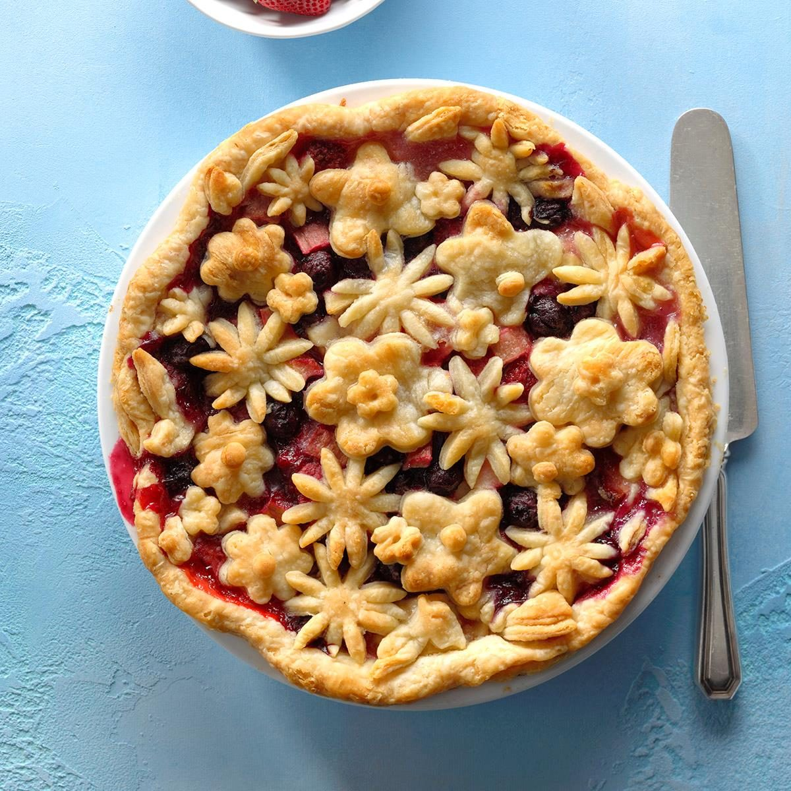

Flaky BumbleBerry Pie

When you want to make an impression, make this pie! The recipe produces one of the flakiest crusts ever,
and the combination of rhubarb and different berries in the filling is delicious.
Ingredients
- 1-1/2 cups all-purpose flour
- 1 teaspoon salt
- 1 teaspoon sugar
- 1 cup cold butter
- 1/4 cup cold water
Filling
- 1 medium tart apple, peeled and diced
- 1 cup diced fresh or frozen rhubarb, thawed
- 1 cup fresh or frozen raspberries, thawed and drained
- 1 cup fresh or frozen blueberries, thawed and drained
- 1 cup sliced fresh or frozen strawberries, thawed and drained
- 1 cup sugar
- 1/2 cup all-purpose flour
- 1 tablespoon lemon juice
Directions
- In a small bowl, combine flour, salt and sugar. Cut in butter until mixture resembles coarse crumbs. Gradually add water, tossing with a fork until a ball forms. Cover and refrigerate 1 hour or until easy to handle.
- Preheat oven to 400°. On a lightly floured surface, roll out half the dough to fit a 9-in. pie plate. Transfer crust to pie plate. Trim to 1/2 in. beyond edge of plate.
- In a large bowl, combine filling ingredients; pour into crust. Roll out the remaining dough; cut out decorative shapes with cookie cutters. Place over filling. Cover edge loosely with foil.
- Bake 20 minutes. Reduce heat to 350°; remove foil. Bake 40-45 minutes or until crust is golden brown and filling is bubbly. Cool on a wire rack.
Editor's Note: If using frozen blueberries, use without thawing to avoid discoloring the batter.